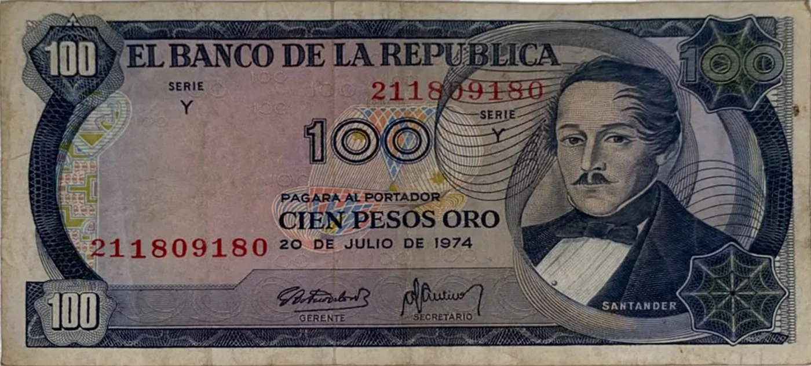
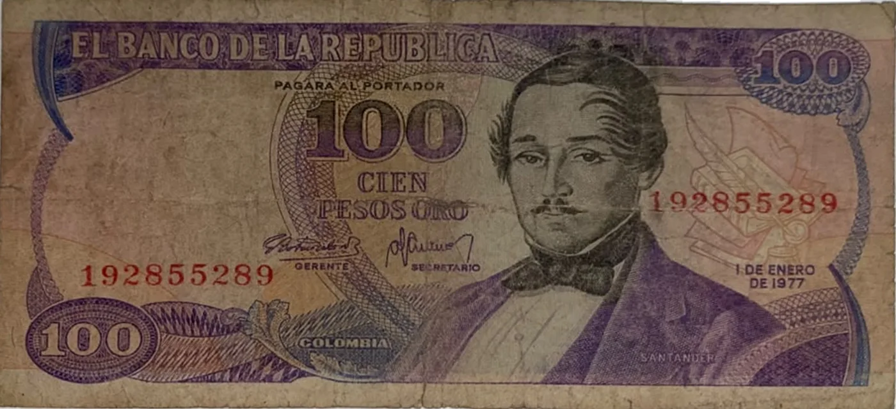
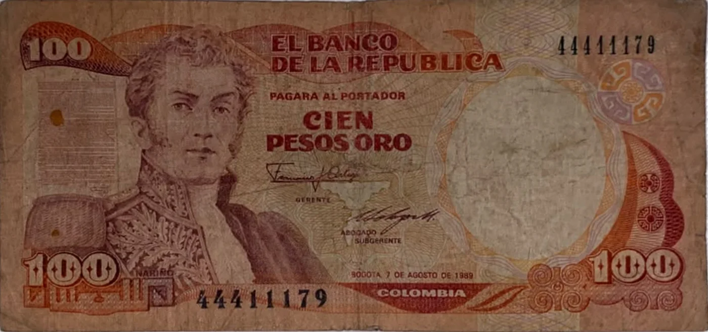
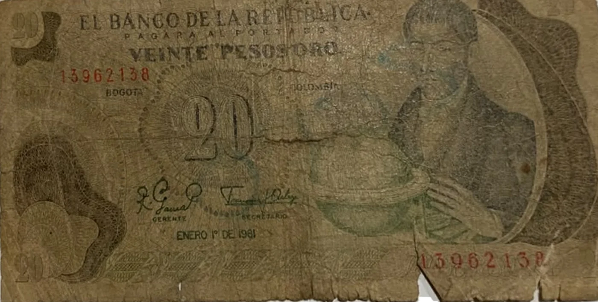
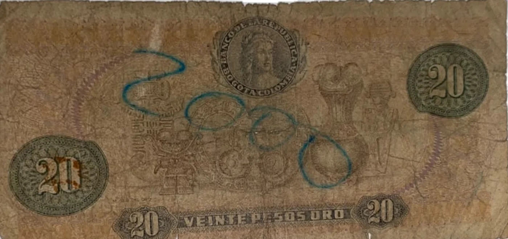
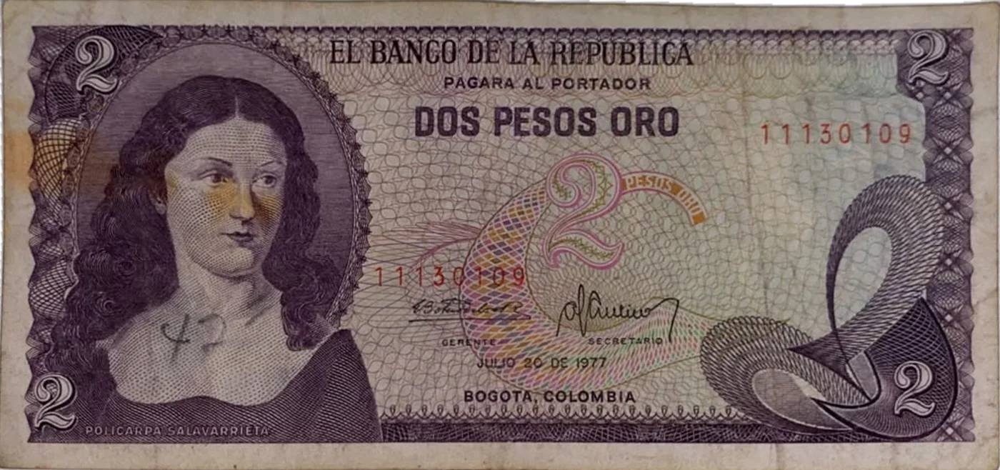
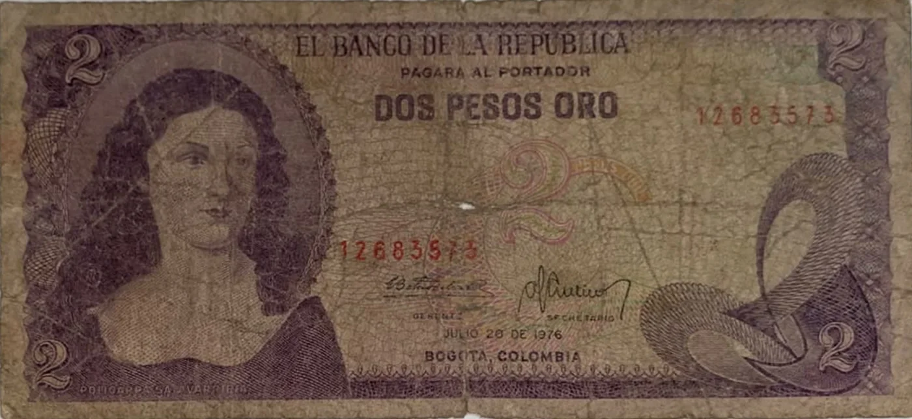

Más de tres días de trabajo
El salario mínimo urbano era de $900 al mes. Un billete de $100 equivalía a 27 horas de jornal. No es raro que este billete esté entre los mejor conservados: era demasiado valioso para andar en el bolsillo.
Blog histórico · Teoría y Métodos de la Historia
Diez billetes que una familia campesina de Granada (Antioquia) sacó de circulación entre 1974 y 1995. Hablan de inflación, de guerra y de ahorro. Y todos dicen «Bogotá».
Estos billetes no son un tesoro numismático: son un archivo doméstico de la inflación. Entre 1974 y 1989, un billete de $100 pasó de pagar más de tres días de trabajo a pagar menos de una hora. La familia los sacó de circulación para guardar un valor que el propio dinero perdía. Su desgaste desigual, las cifras escritas a mano y el «Bogotá» impreso en los diez muestran la distancia entre el Estado que fabrica el dinero desde el centro y la economía campesina de la periferia que lo usa, lo marca y lo guarda.
Folio I · La heurística
La fuente es física, familiar y no está en internet. El diseño de cada billete está catalogado, pero estas diez piezas no: cada una tiene su número, sus dobleces, sus manchas y sus anotaciones.
Néstor Uriel Zuluaga guardaba billetes como pasatiempo desde joven; por eso varios son más viejos que su esposa, Sandra Irene Giraldo. Cuando se casaron, ella adoptó la costumbre. Sabían que el Banco de la República iba a cambiar las ediciones y esperaban que los billetes viejos subieran de precio.
Sandra venía de una familia campesina pobre de Granada. Su padre cultivaba la tierra con la ayuda de sus hijos y les daba la mayor parte del dinero de la cosecha. Pero en la casa se acostumbraba que los hijos le entregaran todo a la madre para comprar la comida del día. El dinero era de ellos y, al mismo tiempo, no lo era.
Un billete es un objeto fabricado por millones. Lo único lo pone el uso.
Por eso leemos cada billete en dos capas: la oficial (quién lo emitió, qué imágenes eligió, qué promete) y la de su vida social (cuánto circuló, quién escribió encima, por qué terminó guardado).
Pase el cursor para ver el reverso. Haga clic para abrir el billete, voltearlo, usar la lupa y leer las notas.
Fragmento de video
Los diez billetes en el orden de sus fechas de emisión, de 1974 a 1995. Fíjese en cómo cambian los colores, los personajes y la palabra «oro», que desaparece en el último.
Folio II · Cambio y continuidad
La inflación colombiana estuvo entre el 17 % y el 32 % anual durante casi todo el periodo. Para medir lo que eso significaba en una casa, comparamos cada billete con el salario mínimo vigente el día de su emisión.



El salario mínimo urbano era de $900 al mes. Un billete de $100 equivalía a 27 horas de jornal. No es raro que este billete esté entre los mejor conservados: era demasiado valioso para andar en el bolsillo.
El mismo valor nominal, ahora en violeta. El salario mínimo ya era de $1.770: el billete pagaba 13,6 horas. La inflación de 1977 fue del 28,7 %.
Con un salario mínimo de $32.560, el billete de $100 ya no alcanzaba para una hora de trabajo. El recuadro punteado muestra el tamaño que tendría si conservara el valor de 1974.
Entre 1974 y 1989, el billete de $100 perdió el 97 % de su poder de compra medido en trabajo. Guardar efectivo era perder dinero; guardarlo de todos modos era apostar por otra clase de valor.
Jornada de 8 horas y mes de 30 días, con el salario mínimo urbano decretado. Elija un billete.
Escala logarítmica: cada marca vale el doble o más que la anterior.
Las marcas doradas son las fechas de los billetes de la caja.
Los tres billetes más pequeños de la caja son de los últimos de su tipo. El de $2 es de 1976 y 1977, y la moneda de $2 apareció en 1977. El de $10 es de 1980, y la moneda de $10 llegó en 1981. El de $20 es de 1981, y la moneda circuló desde 1982. Cuando un billete vale tan poco que no compensa imprimirlo, el Estado lo convierte en moneda: la inflación se ve en el material.
El billete de $500 de enero de 1993 todavía dice «pagará al portador quinientos pesos oro». El de $1.000 de 1995 solo dice «mil pesos». La Ley 31 de 1992 definió la unidad monetaria como el peso emitido por el Banco de la República, y la promesa de oro, que hacía décadas no se cumplía, salió del papel. Firma además un «gerente general»: desde la Constitución de 1991 el Banco es autónomo.
Folio III · Crítica externa
El billete más viejo de la caja, el de $100 de 1974, está entre los mejor conservados. El de $20 de 1981 está roto. La diferencia la explican el material, la velocidad con que circuló cada billete y lo que le pasó antes de llegar a la caja.
Los billetes colombianos se imprimen en papel de seguridad de algodón, no en papel de madera como el de un cuaderno. La fibra de algodón es larga y flexible: aguanta dobleces y hasta un lavado accidental. La tinta de los retratos y las letras se imprime en relieve (calcografía), y es lo primero que se aplana con el roce.
Aun así, el papel tiene un límite. Según el Banco de la República, la principal causa por la que un billete sale de circulación es la suciedad que deja la manipulación. En 2010, un billete de $1.000 sin barniz duraba en promedio 8,7 meses y uno de $2.000, 8 meses. Los de alta denominación duraban por lo menos el doble, porque un billete de baja denominación cambia de mano más veces.


El billete más destruido de la caja, con el sabio Caldas. Valía 51 minutos de trabajo y circuló hasta deshacerse.
Falta un pedazo del borde inferior derecho. El papel cedió justo donde se doblaba una y otra vez.
La esquina superior derecha fue cortada o arrancada. Las esquinas son lo primero que se rompe en una billetera.
Tinta corrida sobre el diseño, quizá de un esfero o de otro papel húmedo.
Los verdes y sepias originales casi no se ven bajo la grasa y el polvo de las manos: la causa número uno de retiro de billetes.
Escrito en tinta azul. 100 billetes de $20 suman $2.000: la cifra parece anotar el total de un fajo. Es una huella de su uso comercial.
El borde inferior está cortado y falta la esquina izquierda. Cada rasgadura es un día más de circulación.
La caja tiene dos parejas de billetes idénticos en diseño. Arrastre la línea roja para comparar.


Cada punto es un billete: su valor en horas de trabajo el día de emisión y su puntaje de desgaste (0 = nuevo, 100 = destruido). Clic para abrirlo.
Inspección visual de las 20 fotografías con cinco criterios, de 0 a 4 cada uno: suciedad, dobleces, bordes, rasgaduras o faltantes, y marcas o manchas. La suma se multiplica por 5. Las categorías siguen la escala numismática española: EBC, MBC, BC, RC y MC.
La tendencia existe, con excepciones que también cuentan algo. Los billetes que valían mucho cuando salieron (el de $100 de 1974 pagaba 27 horas de trabajo; el de $500 de 1987, casi 6) se guardaron casi sin uso: valía la pena atesorarlos. Los de $2, $10 y $20 pasaron por muchas manos antes de llegar a la caja, cuando ya iban a convertirse en monedas. El de $100 de 1977 y el de $2 de 1977 rompen el patrón: uno circuló mucho a pesar de su valor y el otro se salvó del uso pero no de la humedad. La fecha impresa no dice cuándo entró cada billete a la familia; por eso el desgaste es una pista, no una prueba.
Interactivo
Ilustración basada en el billete de $1.000 de 1995, el más nuevo de la caja. Mueva el control para «ponerlo a circular».
Folio IV · Crítica interna
Los billetes se usaron en una vereda de Granada, pero hablan desde la capital. Los lugares que muestran, el sello del reverso y la ciudad impresa forman un retrato de la nación hecho desde el centro andino.
billetes llevan impresa la palabra «Bogotá» en alguna de sus caras: ocho junto a la fecha y dos en la leyenda del reverso. Nueve repiten el sello «Banco de la República · Bogotá · Colombia».
Antioquia no aparece en ninguna imagen. La única huella antioqueña es indirecta: el monumento del Pantano de Vargas, en el reverso del billete de $1.000, es obra del escultor antioqueño Rodrigo Arenas Betancourt, pero está en Boyacá.
Nueve sellos, una ciudad
Nueve de los diez reversos llevan el mismo medallón: «Banco de la República · Bogotá · Colombia». El décimo, el $100 de 1977, no lo trae, pero su imagen dice «Capitolio Nacional · Bogotá».
Santander está en cuatro billetes, Nariño en dos, Caldas y Bolívar en uno. Policarpa Salavarrieta es la única mujer, y aparece en los dos billetes de menor valor. Los pueblos indígenas están solo como pasado arqueológico: la balsa muisca del Museo del Oro y las estatuas de San Agustín. No hay campesinos, ni trabajadores, ni afrodescendientes, ni nadie vivo. Es la nación que imaginaba el Estado: una comunidad de próceres y monumentos.
El contraste también es económico. En 2010, cerca del 65 % de la demanda de billetes de $1.000 y $2.000 se originaba en ciudades distintas a Bogotá, según el propio Banco. El dinero circula sobre todo fuera de la capital, pero la representa.
Seis de los diez billetes tienen fecha de una celebración nacional. El dinero también sirve para repetir el relato oficial cada vez que alguien paga.
Folio V · Causas y consecuencias
Un municipio rural del oriente antioqueño, de economía agrícola y tradición conservadora, en la zona de los embalses. Despensa de alimentos y vecino de uno de los complejos hidroeléctricos más grandes del país, pero con altos niveles de pobreza.
En Granada se cultivaba café, caña para panela y papa. La economía campesina funcionaba como una unidad familiar: todos trabajaban y el ingreso se reunía en la casa. Esa costumbre explica la paradoja de la familia de Sandra. El pago a los hijos era real como reconocimiento de su trabajo, pero el dinero terminaba en la olla común que administraba la madre.
Granada también tiene una larga tradición de ahorro organizado. La Cooperativa San Pío X, luego Coogranada, nació en 1963, y Creafam, impulsada por mujeres, en 1993. Ahorrar no era una rareza familiar: era una práctica colectiva del pueblo.
El dinero también estuvo en el centro de la guerra. El 11 de junio de 1988, unos 80 guerrilleros del ELN y las FARC atacaron en el casco urbano la Caja Agraria, una cooperativa campesina y una agencia de compra de café. En 1992 la Caja Agraria cerró durante cerca de cinco meses por los ataques. En ese contexto, guardar billetes en la casa tenía sentido más allá del pasatiempo.
En 2000 llegó lo peor. El 3 de noviembre, paramilitares asesinaron a 19 personas en el casco urbano y veredas cercanas. El 6 y 7 de diciembre, los frentes 9, 34 y 47 de las FARC se tomaron el pueblo durante 18 horas, con un carro bomba, y destruyeron su centro.
Cada punto, 100 personas
19.444habitantes en 2000
Fuente: CNMH (2016), pp. 33 y 112, con datos del EOT municipal (2000) y del Anuario Estadístico de Antioquia (2015). La cifra de 2002 es aproximada.
Perspectiva histórica · empatía sin anacronismo
Sandra se casó a los 16 años con Uriel, que tenía 28. En la Colombia rural de los años noventa las uniones tempranas eran frecuentes y la ley las permitía con autorización de los padres. Desde la Ley 2447 de 2025 están prohibidas para menores de 18 años. Entender ese matrimonio exige ubicarlo en su época, con sus opciones y sus límites, sin aplicarle las normas de hoy. Reconocer el cambio legal también es parte del análisis.
Los años de la familia son aproximados (c.), calculados a partir de las edades actuales.
Folio VI · La hermenéutica
Cada corriente historiográfica le hace al billete preguntas distintas. Elegimos las que sirven para interrogar un objeto de uso cotidiano.
Muestra cómo vivió la inflación y la guerra una familia campesina, algo que las cifras nacionales no cuentan.
Ver el valor →El Banco de la República, desde Bogotá, con su relato patrio. La familia habla en las marcas, el desgaste y la selección.
Ver la crítica →Del billete a la moneda, del «oro» al peso, de Bogotá a Santa Fe de Bogotá. Continúan el centralismo y la costumbre de guardar en casa.
Ver los cambios →Pasatiempo, expectativa de valor futuro, inflación y bancos atacados. La consecuencia es una colección que hoy vale más como archivo que como dinero.
Ver el contexto →Ahorrar billetes con inflación del 25 % parece un error hoy. Entonces era una forma de tener algo propio y tangible.
Ver la perspectiva →La caja alimenta el orgullo familiar. El análisis muestra también lo que el dinero guardado perdió.
Ver la reflexión →Folio VII · Dimensión ética
La misma fuente sirve para recordar y para analizar. Son dos operaciones distintas y conviene no confundirlas.
El mayor reto hermenéutico
Interrogar un objeto producido en serie. El diseño de cada billete lo decidió el Banco y está documentado. Lo original está en la vida de estas diez piezas: su desgaste, sus marcas y su selección. La fecha impresa es la de emisión, no la de llegada a la familia, y había que evitar leerla como si fuera un recuerdo.
En el mercado numismático el precio depende del estado de conservación, y la mayoría de estas piezas circularon mucho. Su valor está en lo que documentan. La expectativa de la familia sí es un dato: muestra cómo se pensaba el dinero cuando se anunciaban cambios de edición.
El «2000» del billete de $20 coincide con 100 billetes de $20, y el «250» del de $10 con 25 billetes de $10. Parecen anotaciones de quien contaba fajos en una tienda o una agencia. Es una hipótesis que la fuente sugiere pero no confirma.
La razón que da la familia es el pasatiempo y la esperanza de valorización. El contexto de inflación y de ataques a la Caja Agraria no prueba otra causa, pero ayuda a entender por qué guardar dinero en la casa era común.
La idea de una «raza antioqueña» ahorradora es un mito regional. El ahorro de esta familia se explica mejor por la pobreza, la economía campesina y una tradición cooperativa concreta, la de Granada desde 1963.
Cuentan la versión que el Estado quiso imprimir: andina, patria y bogotana. La historia de Granada está en lo que les pasó a los billetes, no en lo que muestran.
Conclusión
Cada billete promete pagar al portador. Para esta familia, lo que pagaron no fue dinero sino historia: la prueba material de veinte años de inflación, de un Estado que se imaginaba desde Bogotá y de una costumbre campesina de guardar lo poco que se tiene cuando todo alrededor se desvanece.
Aparato crítico
Colección familiar Zuluaga Giraldo: diez billetes del Banco de la República (1974–1995), fotografiados por anverso y reverso en noviembre de 2026. Granada (Antioquia). Contexto familiar aportado por los autores.
Banco de la República (2010). «Nota editorial: Experiencia del Banco de la República con billetes barnizados». Revista del Banco de la República, diciembre. Enlace
Banco de la República (s. f.). «Cuidado de billetes y monedas». Enlace
Banco de la República (s. f.). Ficha del billete de 20.000 pesos (papel de seguridad 100 % algodón). Enlace
Centro Nacional de Memoria Histórica (2016). Granada: memorias de guerra, resistencia y reconstrucción. Bogotá: CNMH, Colciencias, Corporación Región. Enlace
Ministerio de la Protección Social (2008). Cuadro resumen salario mínimo legal mensual, años 1950-2008 (incluye la inflación anual). Enlace
Decreto 0159 de 2026, salario mínimo de 2026 ($1.750.905). Enlace
Ley 31 de 1992, sobre el Banco de la República. Ley 2447 de 2025, que elimina las uniones tempranas. Ley 2447
Durán, Ó. (2019). «El Salón del Nunca Más, un reflejo del perdón que necesitamos». La Silla Vacía. Enlace
Wikipedia (consulta 2026). «Colombian peso» (cronología de las monedas de 2, 5, 10 y 20 pesos) y «Billete de mil pesos colombianos». Fuente de apoyo, por verificar en el catálogo del Museo Casa de Moneda.
Anderson, B. (1993). Comunidades imaginadas. México: FCE.
Appadurai, A. (ed.) (1991). La vida social de las cosas. México: Grijalbo. (Incluye a I. Kopytoff, «La biografía cultural de las cosas».)
Bloch, M. (2001). Apología para la historia o el oficio de historiador. México: FCE.
Braudel, F. (1968). La historia y las ciencias sociales. Madrid: Alianza.
Burke, P. (2001). Visto y no visto. El uso de la imagen como documento histórico. Barcelona: Crítica.
Chartier, R. (1992). El mundo como representación. Barcelona: Gedisa.
Chayanov, A. V. (1974). La organización de la unidad económica campesina. Buenos Aires: Nueva Visión.
Ginzburg, C. (1989). Mitos, emblemas, indicios. Barcelona: Gedisa.
Halbwachs, M. (2004). La memoria colectiva. Zaragoza: Prensas Universitarias de Zaragoza.
Hobsbawm, E. y Ranger, T. (eds.) (2002). La invención de la tradición. Barcelona: Crítica.
Jelin, E. (2002). Los trabajos de la memoria. Madrid: Siglo XXI.
Langlois, Ch.-V. y Seignobos, Ch. (2003 [1898]). Introducción a los estudios históricos. Alicante: Universidad de Alicante.
Nora, P. (2008). Pierre Nora en Les lieux de mémoire. Montevideo: Trilce.
Ricoeur, P. (2003). La memoria, la historia, el olvido. Madrid: Trotta.
Scott, J. W. (1990). «El género: una categoría útil para el análisis histórico». En J. Amelang y M. Nash (eds.), Historia y género. Valencia: Alfons el Magnànim.
Seixas, P. y Morton, T. (2013). The Big Six Historical Thinking Concepts. Toronto: Nelson.
Thompson, E. P. (1995). Costumbres en común. Barcelona: Crítica.
Todorov, T. (2000). Los abusos de la memoria. Barcelona: Paidós.
Zelizer, V. (2011). El significado social del dinero. México: FCE.
Las fotografías se recortaron y enderezaron por computador. Las equivalencias usan el salario mínimo urbano vigente en la fecha impresa en cada billete y el salario mínimo de 2026; no son una deflactación por precios. El puntaje de desgaste es una evaluación visual con criterios explícitos.
Para este trabajo usamos un asistente de IA (Claude, de Anthropic) para procesar las imágenes, buscar y organizar fuentes, programar esta página y redactar borradores. La fuente, el contexto familiar, la selección final y la defensa del argumento son nuestros.
Anverso · toque los puntos rojos